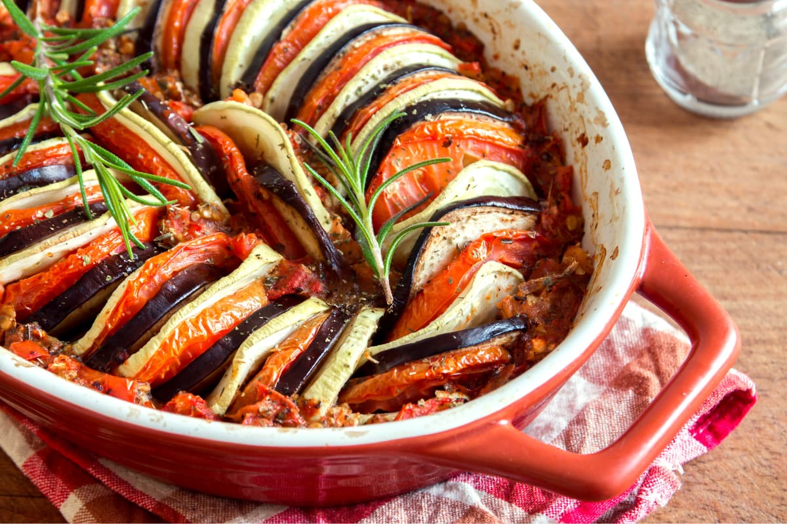
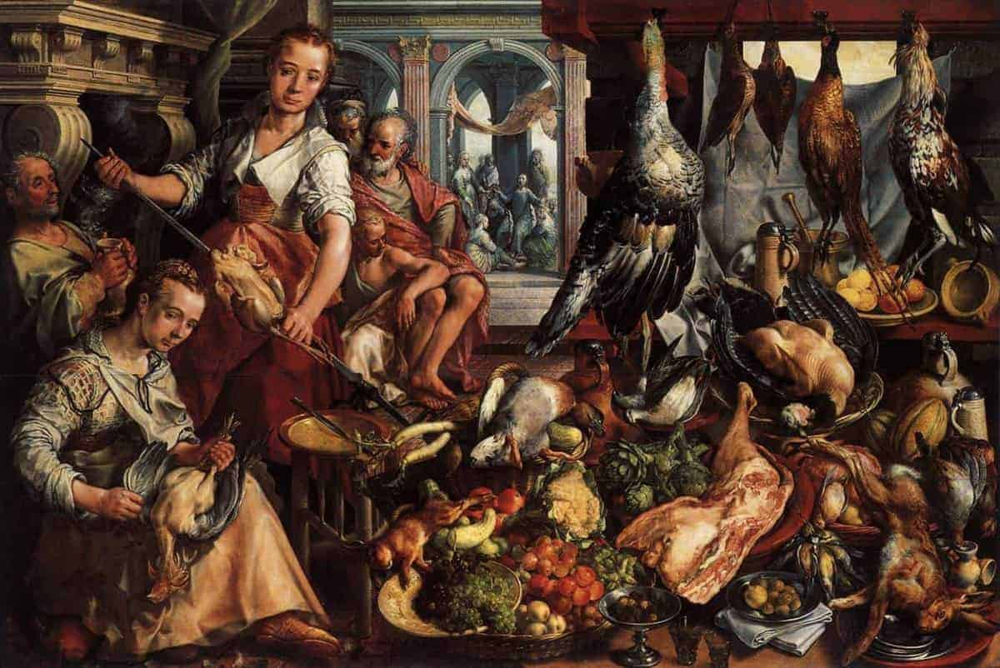
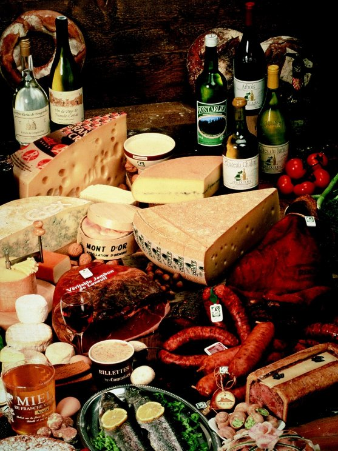

Plato Típico: Foie Gras
La gastronomía francesa es famosa por su elegancia, técnicas de cocina muy cuidadas y gran variedad de platos regionales. Se centra en sabores delicados y en la presentación de los platos.
Historia
Desde la Edad Media, Francia ha desarrollado una rica tradición culinaria. En el siglo XVII, con la influencia de chefs como François Pierre de La Varenne, la cocina francesa empezó a ganar fama por sus salsas, refinamiento y uso de productos locales. Más tarde, en el siglo XIX, Auguste Escoffier organizó la alta cocina francesa moderna. Francia es el país que más estrellas Michelin tiene en el mundo (premios a la alta cocina).
Ingredientes Comunes
Mantequilla, quesos (como el brie o el camembert), vino, hierbas como el tomillo y el romero.